What the app does, how it is built, and how to run it — written for a developer joining the project.
Every screenshot in this document shows simulated data. The accounts, cases, feed posts and recordings are seeded; the photographs and audio waveforms are generated, and each is captioned SIMULATED. Nothing here is a real investigation or a real person. Screens were captured on a iPhone simulator in dark mode.
IsHaunted is a platform for paranormal investigation groups and the people who ask them for help. The website runs the business — cases, clients, groups, billing. This app is the part that goes into the building at 2am.
It is a native Swift 6 / SwiftUI universal app. One target runs on both devices and picks its
shell by size class: a TabView across the bottom on iPhone. This document covers the iPhone; the iPad
has its own.
It is a pure REST client. The app talks to Ben.Data.WebApi and
nothing else. Ben.iOS/ is deliberately not referenced by Ben.slnx, so
the website and the API never see it and cannot be broken by it. Roughly 90% of the code lives in
BenKit, a local Swift package — networking, auth, models, config — which is where to
start reading.
These are worth knowing before reading any screen, because every screen assumes them.
1. A refusal must never render as "nothing here." Every screen goes through
LoadStateView, and loading / empty / refused / session-ended / rate-limited are
visually distinct states. An empty list and a server saying no are different facts, and a UI that
shows the same grey nothing for both teaches people to distrust it.
2. Website features map to native counterparts. Calendar to EventKit, locations to MapKit, uploads to the native camera and PhotosPicker, reports to PDFKit, sharing to the share sheet. If the website does it in HTML, the app does it the iOS way rather than wrapping a page.
3. One URL space, two front ends. DeepLinkParser maps the website's route
table onto native screens, so ishaunted:// and eventually
https://ishaunted.com/... links land on the right screen.
4. The C# client patterns are the specification. TokenSession ports the
website's bearer-token handler — single-flight refresh, expiry minus 30 seconds — and response
mapping ports WebApiClient rule for rule: 401 means the session ended, 403 does
not.
The app opens here. The feed is the front door: posts from groups and investigators, with media, hashtags, mentions and a group-verified badge.
Three lanes — For You, Latest, Following. "For You" is ranked by a category-match model whose weights are re-fit from labelled examples on the server, so it changes as the database grows rather than being a fixed rule.
Every image in this document is generated. Feed media here is simulated so the screenshots show a populated app; the frame captions say SIMULATED.
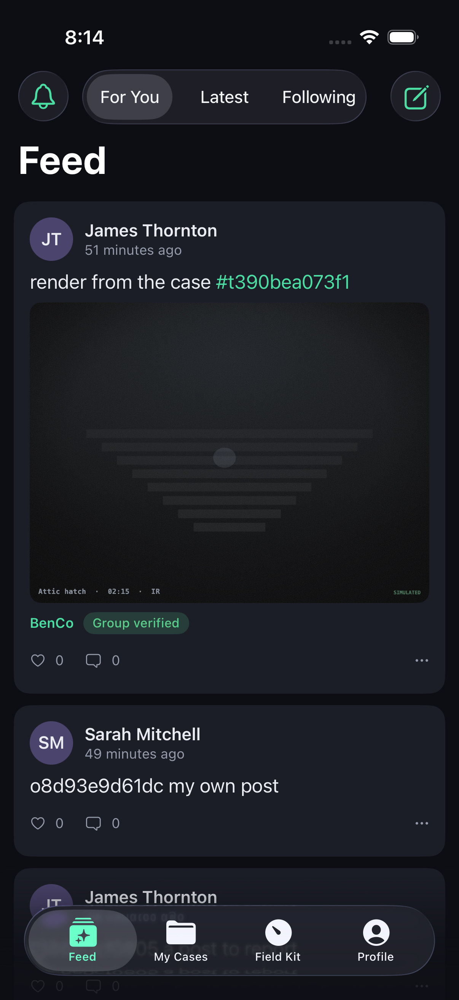
Bell in the top left. Notifications are server-side records rather than push-only, so the list is the same whether or not the person allowed push, and a device that was switched off misses nothing.
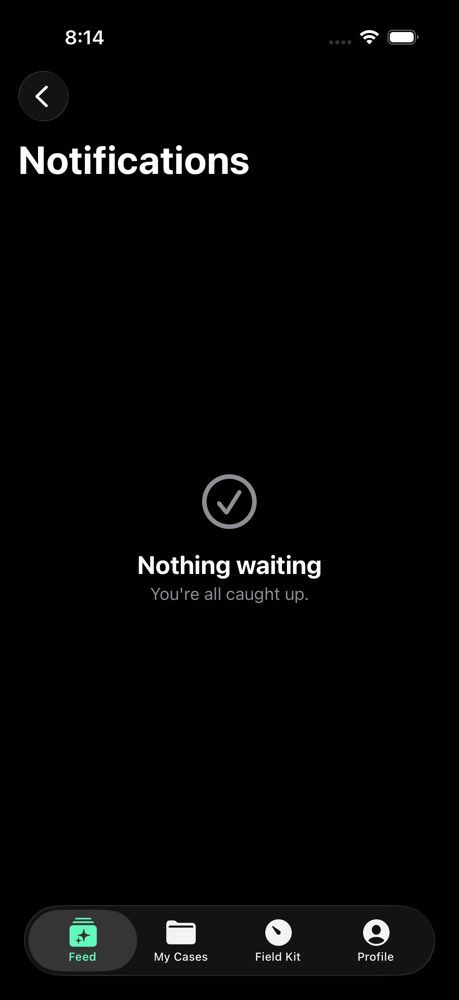
A case is the unit of work: a client, a place, a history, and everything gathered about it. This list is what the signed-in person may see, which is not the same as everything that exists — the server decides, and the app shows what it is given.
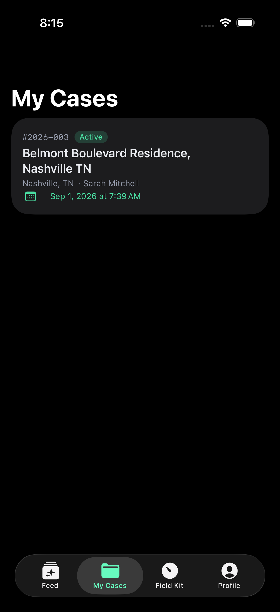
The case detail carries the original request, the timeline, files, investigations, and the people involved. Tabs are the same subjects the website uses, so somebody who knows one knows the other.
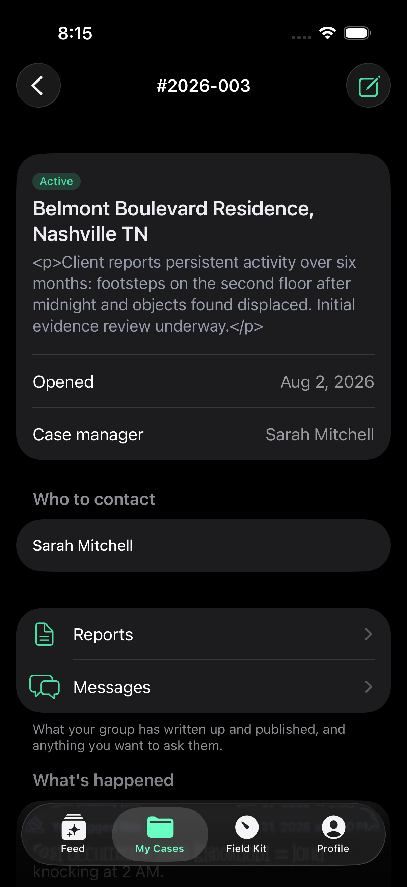
Messages between the group and the client, in the case they belong to rather than in a separate inbox. A message that cannot be read in context is worth much less.
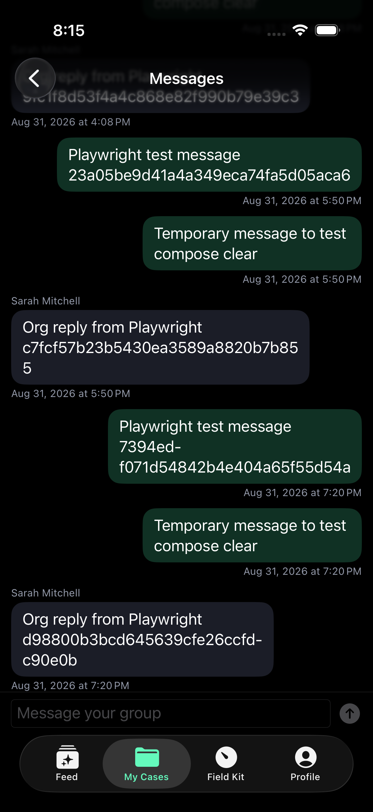
Everything above has a website equivalent. This does not. The Field Kit turns the phone into an instrument, and it is the part a new developer should read first and most carefully.
The home screen lists past sessions and starts a new one. A session is a recording in the fullest sense: not a single measurement, but every reading from every enabled sensor, for as long as it runs.
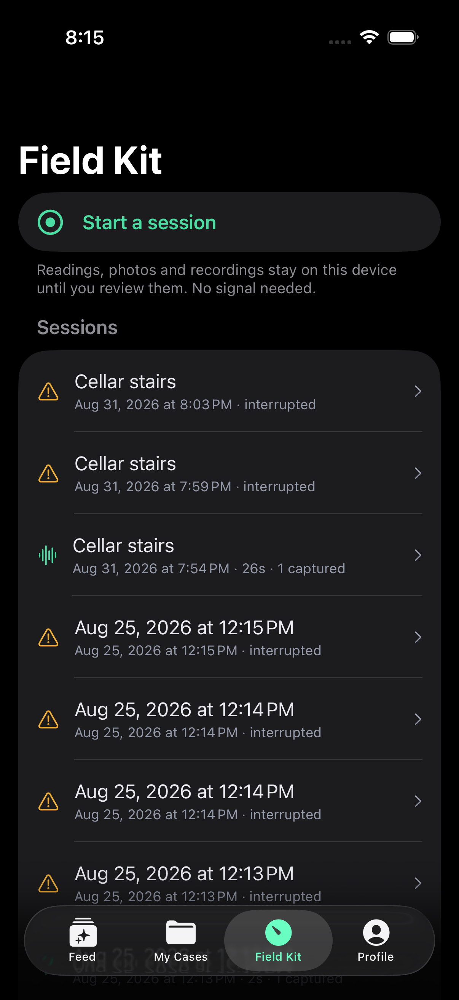
A session is named before it starts, not afterwards. The name is how it is found later, and asking at the end — when somebody is tired and packing up — is how recordings end up called "Session 4".
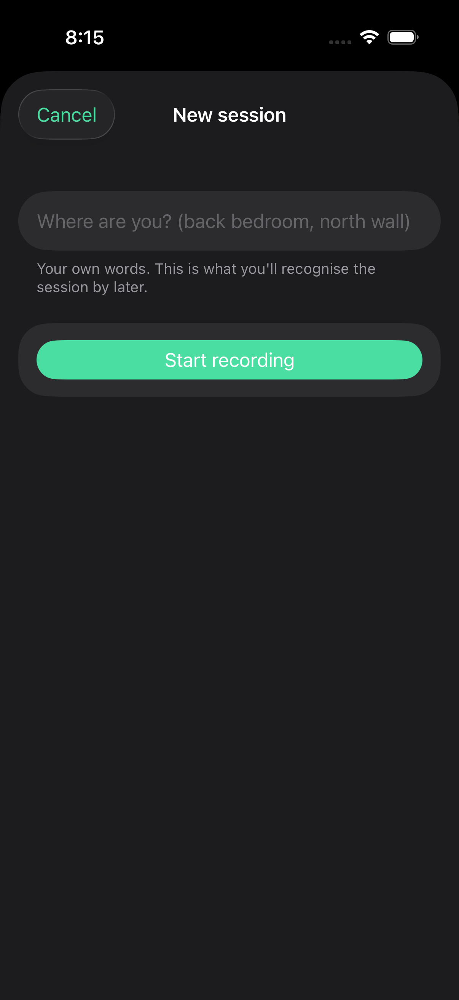
The instrument. The dial is a magnetometer readout; below it are sound, and whatever else is enabled.
The needle is missing on purpose until you set a base level. It shows the departure from base, not the absolute field, because the absolute number means nothing on its own — the Earth alone reads about 500 mG and every building bends that. Before a base exists there is no departure to point at, so the dial says "Set a base level" instead of sweeping a scale nobody can interpret.
The needle is also damped rather than snapping to each sample. A real meter's movement has mass, and more usefully, a needle that jitters at 10 Hz is unreadable in the dark — which is the only place it is ever read.
The caption under the dial is deliberate too: "Magnetic field only — this is not an AC electromagnetic meter." The app says what the instrument is not, because a person holding it in a basement cannot check.
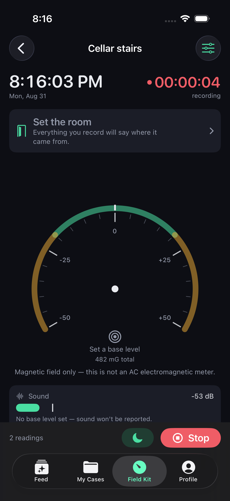
Once a base is taken, the needle appears and the readout becomes a signed departure from it — +12 mG from base — with the report threshold marked on the dial. A needle pegged at the stop turns red rather than resting quietly at the maximum, because a reading at the limit is a reading whose real value is unknown.
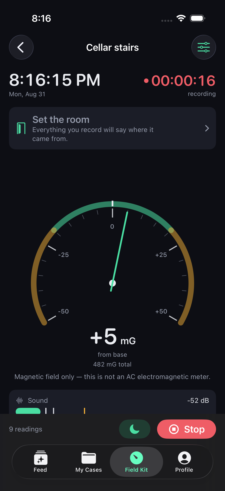
Scrolling the live session reveals the rest of the instrument. Each control, and what it is for:
| Control | What it does | Example |
|---|---|---|
| Position | Live GPS with its accuracy and altitude change. Accuracy is shown, not hidden, so a reading taken at ±28 m is not later mistaken for a precise one. | 36.16280, -86.78137 ±28 m |
| Reset base | Takes the current field as the new normal. Used on entering a new room, because "normal" is a property of the room, not the building. | Move from the hall into the cellar, reset, and the dial answers the cellar's question. |
| Mark | Stamps this instant in the recording. Marking is cheap and reversible; it is the thing to press when something happens and there is no time to type. | A door moves — press Mark, describe it later from the replay. |
| Note | A typed or dictated note, timestamped and attached to the session. | "Three knocks, low on the wall, north side." |
| EVP | Ask a question and have the asking recorded as a marker, so the answer window is findable later instead of being hunted through an hour of audio. | "Is anyone here?" — the question is marked, the following silence is where to listen. |
| Photo / Video | Capture into the session. Anything taken is stamped with where you were and which room you had named. | A photo of the stairs, filed to "Cellar stairs". |
| Audio | Continuous recording for the session, which is what EVP markers point into. | Runs for the whole session unless switched off. |
| Watching (sentry) | Put the device down and let it watch. Anything past your thresholds is marked automatically for you to find later. | Leave it on a landing during a break; come back to marks you did not have to be present for. |
| Room | Names where you are. Everything recorded afterwards says which room it came from. | "Cellar stairs" then "Boiler room". |
| Blackout | Kills the screen to near-black while continuing to record. A lit phone ruins both night vision and the video. | Tap to darken; tap again to return. |
| Sensor toggles | Each sensor can be switched off, with its battery cost stated plainly — "Barely touches the battery" against video's heavier cost. | Long overnight sit: magnetic field and audio on, video off. |
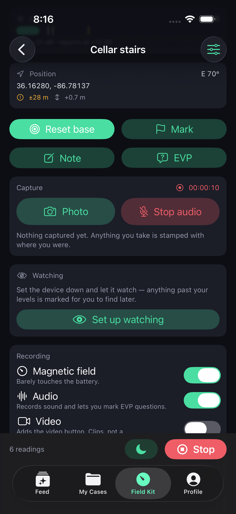
A mark is a moment; a note is a moment with words attached. Both land in the same timeline as the sensor readings, which is what makes the replay coherent — the readings, the marks, the notes, the photographs and the audio are one record, not five.
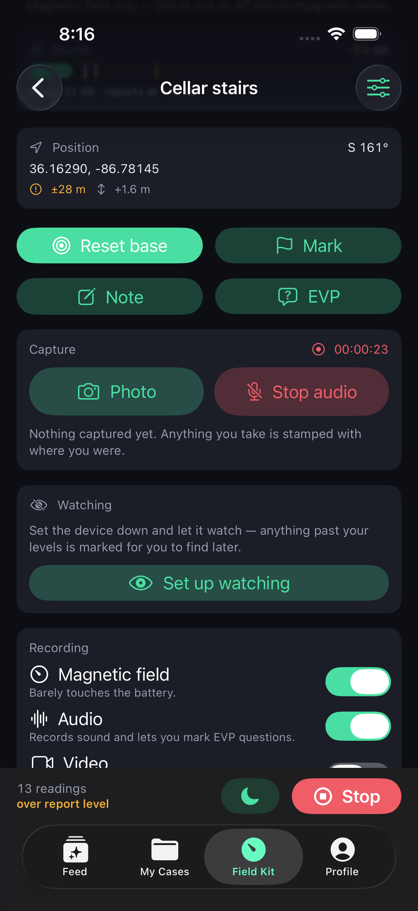
Notes can be dictated, because typing in the dark with gloves on is not realistic. The note is stamped with the time and the current room.
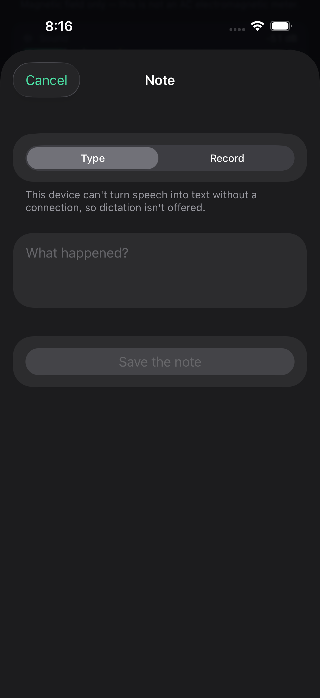
The Field Kit records every reading, continuously, for the whole session — and selecting a past session plays the entire recording back as it happened. This is deliberate and it is the central idea of the feature.
It does not show you one reading at a time, and it does not ask you to pick a measurement out of a list. It replays the session: the dial moves as it moved, the marks arrive when they arrived, the notes appear when they were written, and the audio and video run alongside them on the same clock.
The reason is that a single reading proves nothing. "47 mG at 02:14" is an anecdote. What matters is what the field was doing for the ten minutes around it, whether anybody was moving, what the room was, and what was heard at the same moment — and the only way to judge that is to watch it happen again.
The whole recording can then be submitted as evidence, not just a clip or a screenshot. It attaches to a case or is published to a place's archive, and it plays back in a player in the web app — the same replay, in the browser, for people who were not there. That is what turns a night's work into something a client, a colleague or a stranger can actually assess.
Stopping opens the review: what was captured, how long it ran, what was marked. From here the session can be exported, attached to a case, or published to a public place's archive.
Public events — tours, open investigations, group meetings. Someone who attended can offer what they captured; a group member reviews it, and an accepted submission becomes part of that event's public record, credited to them.
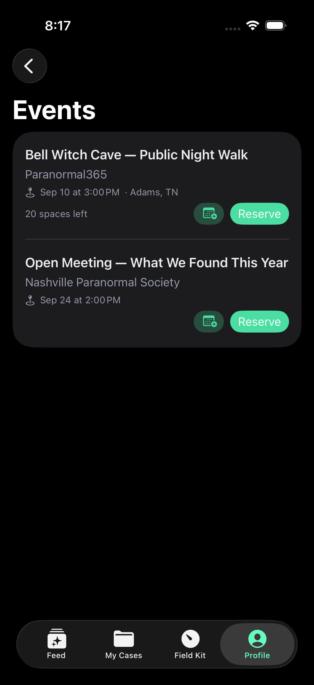
Account, security, environment, and the About and Privacy screens Apple requires to be reachable without an account.
The app deliberately shows somebody only what applies to them. A person investigating alone does not see group administration; someone who is not on a ghost walk does not see its controls.
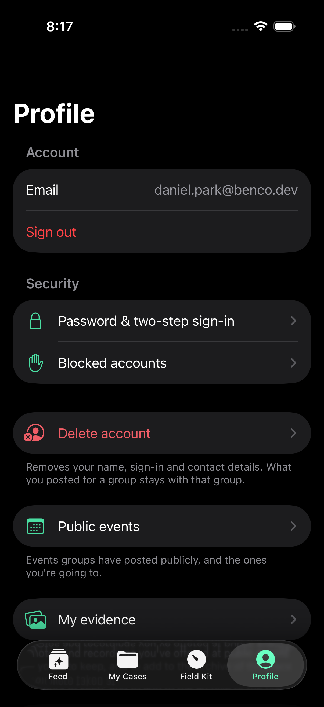
What this person has captured and offered, and what became of it. A guest who photographed something at somebody else's event keeps their own copy and can see whether it was accepted.
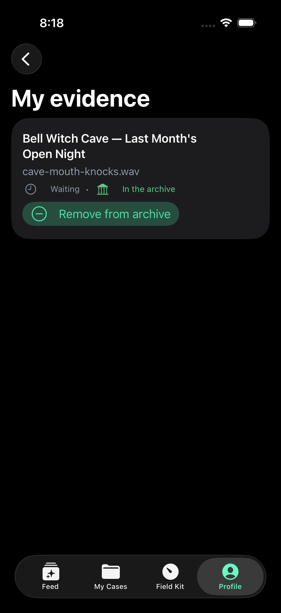
Password, two-factor, sign-out, and account deletion. Deletion anonymises rather than shredding where a record must survive — and the server refuses to delete a group's last owner, because an ownerless group is worse than a deleted account.
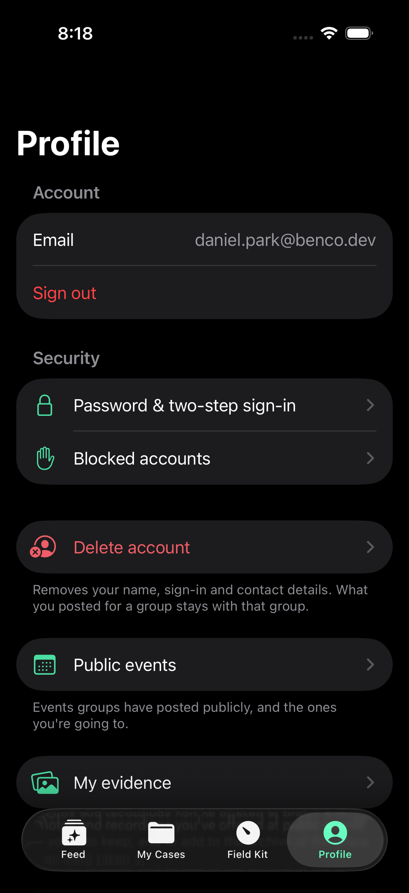
From Ben.iOS/:
./scripts/test.sh BenKit unit tests, host only, no simulator ./scripts/build.sh unsigned simulator build (CI compile check) ./scripts/run-sim.sh build, install and launch on iPhone 17 Pro ./scripts/run-sim.sh "iPad Pro 13-inch (M5)" OPEN_LINK="https://ishaunted.com/events" ./scripts/run-sim.sh deep-link on launch
Run the API first — dotnet run in Ben.Data.WebApi on :5252 — and pick
Dev under Profile → API environment. The simulator reaches the Mac's localhost
directly.
One trap worth knowing. A fully unsigned build
(CODE_SIGNING_ALLOWED=NO) cannot use the simulator Keychain, so token persistence
silently fails and every launch looks signed-out. Only build.sh disables signing;
run-sim.sh and Xcode use ad-hoc signing on purpose.
Screenshots for this document are captured by
IsHauntedUITests/DeveloperDocCaptureTests, which needs its flag passed as a shell
environment variable — TEST_RUNNER_BEN_DOC_SHOTS=1 before xcodebuild, not
as a build setting, or the test silently skips.